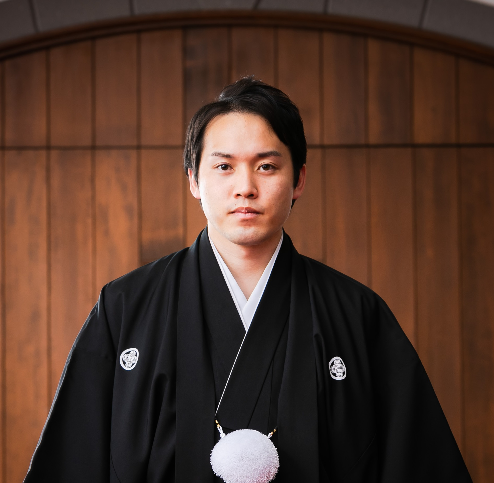

Profile

webデザイナー SHO MATSUDA（松田 正太郎）
1991年生まれ。東京都昭島市在住。
出身は北海道札幌市。
工学院・修士課程修了後、大手自動車メーカにてエンジニア。
その後、大手人材会社のヘッドハント部門で、ヘッドハンターとして活動。
2021年より、フリーランスのwebデザイナーへ。
ヘッドハンター時代に培った、「クライアントと実直に向き合う姿勢」を大切に、
ブランドの世界観を適切に伝えるためにweb制作をさせていただいております。
Skill
HTML5 / CSS
見やすいコーディング、デバイスに沿ったレスポンシブデザインを。
jQuery / Javascript
ブランドの世界観を伝えるための、適切なアニメーションや演出を。
WordPress
長く愛されるための、WordPressテーマ作成、メンテ、プラグインを。